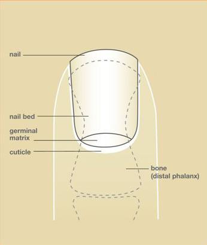
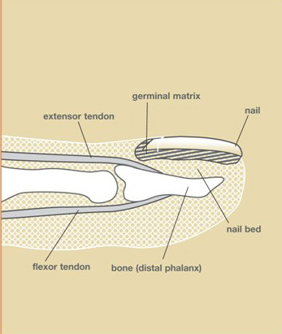

Kondisyon
Blesi Kouchèt Zong
Blesi nan tisi ki anba zong lan, ki gen ladan san anba zong ak koup ki afekte kijan nouvo zong lan ap grandi.

Illustration © American Society for Surgery of the Hand
Kisa yon blesi kouchèt zong ye?
Kouchèt zong lan se tisi mou ki dirèkteman anba zong lan. Se li ki fè nouvo zong lan pandan l ap grandi. Lè yon dwèt kraze, koupe, oswa pran nan yon pòt, kouchèt zong lan anba a souvan blese menm si po ak zong lan sanble antye. San ka akimile anba zong lan, oswa kouchèt zong lan menm ka koupe. Paske nouvo zong lan grandi sot nan tisi sa a, kijan kouchèt zong lan geri ap afekte kijan pwochen zong lan parèt.
Sentòm komen
- Yon koulè ble fonse, mov, oswa nwa anba zong lan
- Doulè grav k ap bat nan pwent dwèt la
- Yon zong ki chire, lache, oswa ki manke
- San k ap koule anba oswa alantou zong lan
- Yon koup atravè zong lan ki rive nan kouchèt zong lan anba a
Poukisa sa rive?
Blesi kouchèt zong souvan swiv yon kraze oswa yon koup nan pwent dwèt la:
- Yon dwèt ki pran nan yon pòt, tiwa, oswa pòt machin
- Yon mato oswa yon bagay lou ki frape dwèt la
- Yon koup ak yon kouto, si, oswa yon zouti file
- Blesi espò kote pwent dwèt la resevwa yon chòk oswa yo mache sou li

Illustration © American Society for Surgery of the Hand
Paske zo a chita dirèkteman anba kouchèt zong lan, yon fraktè nan pwent dwèt la (fraktè falanj distal) souvan prezan tou.
Opsyon tretman
Tretman san operasyon
- Trepanasyon (drenaj san anba zong lan). Si pifò doulè a sòti nan san ki bloke anba zong lan, yon ti twou yo fè atravè zong lan nan biwo a ka soulaje presyon an nan segond. Jeneralman yo kite zong lan nan plas li epi li grandi nòmal.
- Chanjman pansman. Yo mete yon pansman pwoteksyon epi yo chanje l chak kèk jou. Dwèt la rete leve e pwòp.
- Atèl. Si gen yon fraktè nan zo pwent lan, yon ti atèl pwoteje pwent dwèt la pou anviwon 3 semèn.
Tretman chirijikal
- Reparasyon kouchèt zong. Si kouchèt zong lan koupe oswa chire, yo koud li ak pwen fen ki absòbe ak anestezi lokal. Sa bay nouvo zong lan pi bon chans pou grandi dwat e kole.
- Ranplasman zong oswa separatè. Zong orijinal la (netwaye) oswa yon ti separatè plastik mens souvan mete anba kitikil la apre reparasyon an. Sa kenbe espas la ouvè pou nouvo zong lan ka grandi san kwoke.
- Fiksasyon zo. Pafwa yo itilize yon ti pen si zo pwent lan kase yon fason li p ap rete nan plas li poukont li.
Nouvo zong lan grandi dousman. Tann anviwon 3 a 6 mwa pou zong lan grandi konplètman, epi zong lan ka gen rèl oswa chanjman pandan kèk tan menm apre yon bon reparasyon.
Sa pou w tann nan vizit ou
Dr. Barrera ap egzamine pwent dwèt la, teste sansasyon an, epi pran yon radyografi pou chèche yon fraktè anba kouchèt zong lan. Pifò blesi kouchèt zong trete nan biwo a oswa nan sal ti pwosedi ak anestezi lokal. Objektif la se bay kouchèt zong lan pi bon chans pou geri plat e dwat pou nouvo zong lan grandi byen.
Rele nou si dwèt la frèt, pal, oswa angoudi, si san anba zong lan ap lakòz doulè grav k ap bat, si zong lan rache an pati, si gen yon koup ki fon alantou oswa anba zong lan, oswa si blese a vin wouj, ap koule, oswa trè dolore apre premye oswa dezyèm jou a.
Gade tou
Kesyon?
Rele kote biwo ou a pou kesyon ki pa ijan:
- NYU Langone Laurelton · 646-501-4950
- NYU Orthopedic, Woodside · 929-429-3222
- NYU Orthopedic, Richmond Hill · 718-206-6923
- Jamaica Hospital Ambulatory Care Center (ACC) · 718-301-0720
Gade enfòmasyon kontak biwo nou yo pou adrès ak nimewo faks.